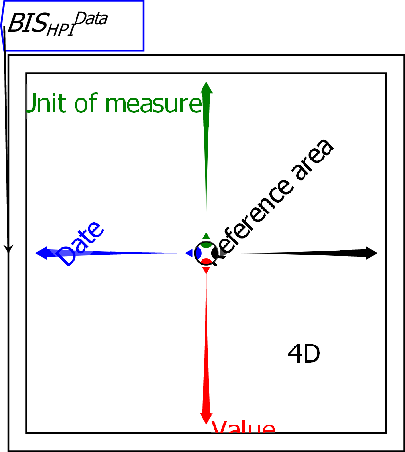
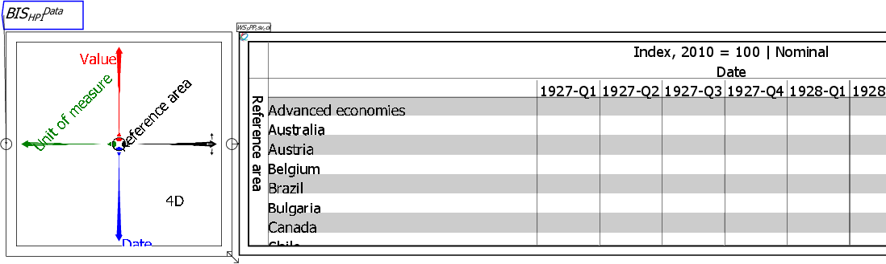
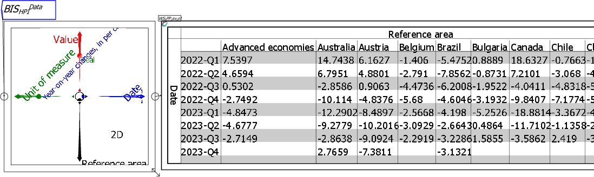

A Ravel is a graphical representation of multi-dimensional data. Unlike a spreadsheet, which has only two dimensions, a Ravel can have as many dimensions as your data. You manipulate the axes of a Ravel to select the components of your data that you wish to see, and those components are then the output of the Ravel, which can be graphed or displayed directly, or attached to variables which can be further analysed using the flowchart equation capabilities of Ravel. The Ravel below loads data from the Bank of International Settlements on house prices. This data has four dimensions:

When a Ravel is first attached to data, it outputs the entire data set--which is indicated by the dimension count 4D in the lower right quadrant of this Ravel. You can see this by attaching a Sheet to the output port of the Ravel:
![\includegraphics[width=\textwidth]{images/tut01Ravel4DwithSheet}% WIDTH=556 HEIGHT=159](img70.png)
The right-pointing axis of the Ravel determines what is shown on the rows of the sheet, while the down-pointing Axes of the Ravel determine what is shown by the columns. At present these are Reference Area by Value, and the sheet shows a slice of that data for the first entry in the Date and Value axes-1927-Q3, and Nominal (unadjusted for inflation).
It would be more useful to see the data by Reference Area by Date. To get that view, click the left mouse button on the arrowhead of the Date axis, hold the button down, and rotate the axis into the down direction, which is currently occupied by the Value axis. When you release the mouse button, the Date axis will replace the Unit of measure axis in the down direction, and the data in the Sheet will now have countries by rows and Quarters by columns.

The Sheet is still blank, because there is no data for the current selections-there is no data for Index for Nominal House Prices in the very first Quarters of the data (in the years 1927 and 1928) for the first countries in the file in alphabetical order.
To see data immediately, you can take advantage of a feature of the Sheet: it can display the first few rows and columns of data (the default setting), which we call the Head, the last few (the Tail), or a few of both (Head and Tail). To show the last few rows and columns, right-click on the Sheet and choose Row Slices/Tail and Column Slices/Tail". That will then show you the last countries in the data file in alphabetical order, and the last quarters in the data file.
The data still shows the Nominal Index data, since these are the first entries in the other two axes. You can control the entry shown using the selector dots on those two axes: these are the coloured dots that are currently within the inner circle of the Ravel. Selector dots can be moved:

To really develop insights from your data, you attach the output of the Ravel to variables, and analyse them using Ravel's flowchart mathematics formulas.